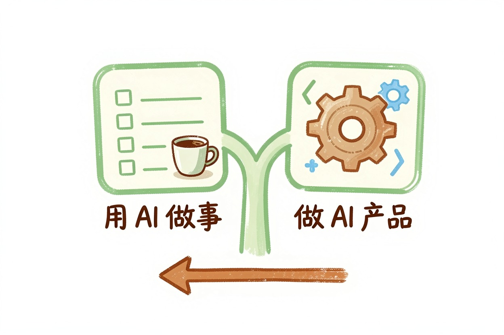
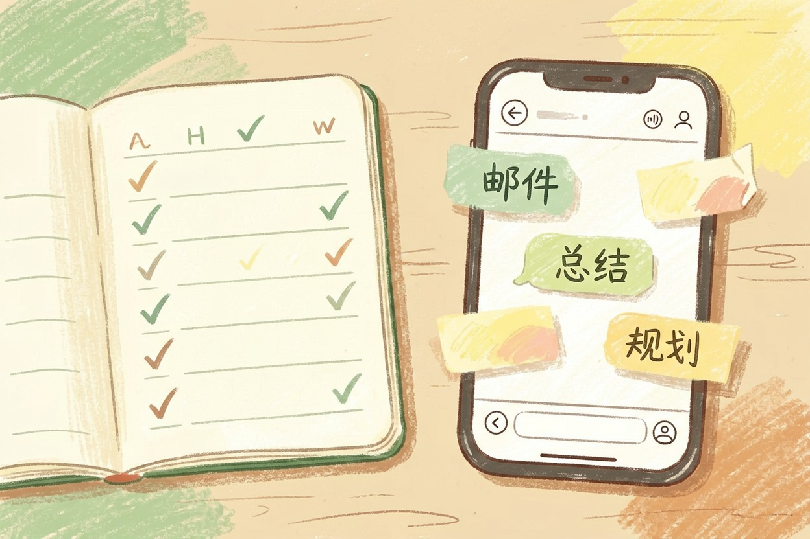

AI 入门怎么学？非技术人路线图
非技术人学 AI 不用先学编程。本文讲三步走、两条路判断，以及新手最容易踩的四个坑。
AI 入门怎么学，非技术背景的人最容易走错第一步。第一课不是学编程，是把 AI 用起来。路线就三步：先用、再问透、后理解。
先认清自己走「用 AI 做事」还是「做 AI 产品」，再决定学多深。下面展开讲。
AI 入门怎么学：先想清楚你为了什么

先分清两条路。Power User，用 AI 做事，绝大多数人走这条。Builder，做 AI 产品，需要编程和更深的技术。
多数人学 AI 是为了提高工作效率，走 Power User 就够了。别一上来就背数学、学算法，那是 Builder 的路。先想清楚目的，才知道该学多深、花多少时间。
具体的工具路线，可参考AI 学习路径指南，本篇讲心态和方法。
第一步：会用，从日常任务开始

先用起来。写作、翻译、总结、规划，选一个高频场景，每天用一次。比如让 AI 帮你总结长文章、起草邮件、规划周末行程。
给个简单建议：一周至少花 20 分钟，持续一个月。别追求一次学会所有功能，先养成「有事就问 AI」的习惯。日常任务最熟悉，也最容易建立信心。想找合适的工具，去AI 工具导航里挑。
第二步：问透，学会写提示词
会用之后，学提问。提示词是普通用户最值钱的技能，比学任何工具都划算。同一句话，问法不同，结果天差地别。
比如「帮我写总结」和「你是我的助理，把这份会议记录总结成三条要点，每条 50 字」，后者直接能用。这是AI 提示词怎么写的核心内容，值得专门看。会提问，才算真正会用 AI。
第三步：理解，搞懂核心概念
问透了，再补概念。不用学数学，也不用会编程。搞懂三件事就够：大模型是什么、AI 幻觉是什么、Token 是什么。
知道大模型是什么，你就明白它为什么像会思考；知道Token 是什么，你就懂它为什么按字数收费。这些概念帮你建立判断力，知道该信 AI 哪部分，不该信哪部分。想要一份按天走的计划，就把下面这段话丢给 AI：
把下面这段话改写成新手能听懂的入门计划：
[粘贴你想学 AI 的具体场景，比如：想用 AI 写周报/想用 AI 做图]
要求：拆成 7 天可执行的小步骤，每天不超过 30 分钟。别踩的坑：别囤课、别先啃编程、别追新工具
最后说避坑。第一，别囤课。收藏一堆课程不等于学会，先把手上的用起来。第二，别先啃编程和数学，除非你确定要走 Builder 路线。
第三，别追新工具，工具迭代太快，追不过来。第四，别信「速成」，凡是承诺几天学会、包变现的，先警惕。学习优先用官方免费资源，比如微软官方学习平台{:target="_blank"}和OpenAI 官网{:target="_blank"}，以官方发布为准。
AI 入门怎么学，说到底就一句：先动手，再深入。别囤课，别信速成，别先啃编程。先用起来，再问透，后理解，三个月后你会明显不一样。
学 AI 不必一步到位，慢慢来反而更快。这一篇是全站第 100 篇，也是给你的起点。AI 入门怎么学，答案早就写在第一步里：从今天开始，用 AI 做一件具体的小事，入门就真正开始了。
本文信息核对于 2026-08-06。AI 产品的价格、免费额度与功能变动频繁，实际以各工具官网当前说明为准。